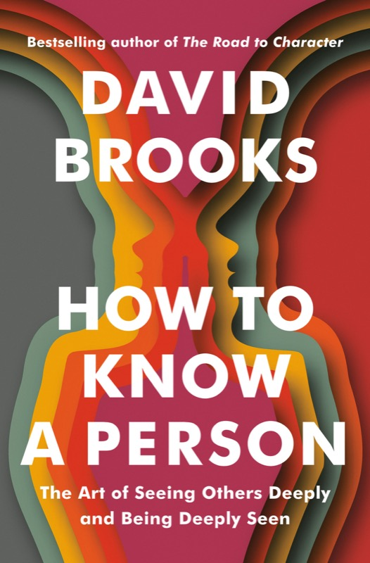

David Brooks grew up in a family whose motto might have been “Think Yiddish, act British”: loving, clever and buttoned up. He became a columnist who, by his own account, could make meaningful eye contact with people's shoes whenever they got personal. Once a broken bat landed at his feet at a baseball game and he just sat there, still-faced. Fatherhood, failures and ageing softened him, and after his second interview with her, Oprah told him: “I've rarely seen someone change so much. You were so blocked before.” This book collects what he learned on the way, from therapists, actors, biographers, teachers, novelists and researchers, about the one skill he thinks sits under all the others: seeing another person accurately and making them feel seen.
Chapter 1 · The power of being seen
People need recognition about as much as they need food. “The worst sin towards our fellow creatures is not to hate them,” Shaw wrote, “but to be indifferent to them.” When Brooks asks people about times they felt seen, their eyes light up: someone spotted a talent they couldn't see themselves, or knew exactly what they needed when they were exhausted.
He gives three reasons to get good at this. The practical one: you can't choose a spouse, hire, keep staff or parent well without understanding people. (When McKinsey asked managers in 2021 why staff quit, they guessed pay. The staff said they didn't feel valued or seen.) The spiritual one: being seen makes people grow. “In how you see me, I will learn to see myself.” And the civic one: diverse democracies only hold together if citizens can look across difference and say, “I'm beginning to see the world through your eyes.”
And you are worse at this than you think. In William Ickes' studies of “empathic accuracy”, strangers read each other's thoughts correctly about 20% of the time, close friends and family about 35%. People who are terrible at it rate themselves as highly as people who are good. Long-married couples often get worse, because they lock in an early picture of their spouse and stop updating it.
The chapter ends with Brooks glancing up from a dull book and seeing his wife in the doorway, late light behind her, looking at an orchid. He felt, for a moment, that he knew her through and through: not facts, but “the whole flowing of her being”. The word he lands on is beholding. “To really know someone, you have to know how they know you.”
The basic skills for meeting people in ordinary, healthy times.
Chapter 2 · How not to see a person
Brooks sits in a Washington bar watching a man on a first date talk about himself for ten minutes while staring at a spot on the wall above his date's head. Nobody in the room is really seeing anybody. Brooks is no better: he is doing the size-up, reading the bartender's tattoos and filing her under a music taste. The untrained eye isn't enough. “You'd never think of trying to fly a plane without going to flight school.”
Other languages have words for the opposite: Korean nunchi, sensitivity to other people's moods, and German Herzensbildung, training the heart to see the full humanity in someone.
Chapter 3 · Illumination
In Waco, Brooks interviewed LaRue Dorsey, a 93-year-old retired teacher who presented herself as a strict disciplinarian. Brooks felt a little intimidated. Then Jimmy Dorrell, a pastor who runs a church for homeless people under a motorway bridge, walked in, grabbed her shoulders and shouted “Mrs. Dorsey! You're the best! I love you!” Her stern face vanished and “a joyous, delighted nine-year-old girl appeared”. A different quality of attention called out a different version of her.
Jimmy looks at everyone as a soul of infinite worth. You don't have to share his faith, Brooks says, but you do need that posture of respect: assume every person contains something with no weight or shape that gives them infinite dignity, and that every person is “not a puzzle that can be solved but a mystery that can never be gotten to the bottom of”. “Attention,” as Iain McGilchrist writes, “is a moral act: it creates.”
This is Brooks' answer to “how do I become a better person?” Against Kant-style systems of abstract principle, he follows Iris Murdoch: morality happens mostly in how we attend to others, all day long. The essential immoral act is failing to see people correctly; the essential moral act is casting a “just and loving attention” on them. Her example is a mother-in-law, M, who is always polite to her daughter-in-law D but privately finds her coarse and common. Nothing about her behaviour changes; she simply decides to see D as “spontaneous” and “fresh” instead. That inner work is the moral act. We can, Murdoch writes, “grow by looking”.
The therapist Mary Pipher is his model: her trick is to have no tricks. She sees people as love-seeking and doing their best, looks for the good in families, and once called a father back into her office to praise him for offering his family ice cream after a hard session. His eyes filled with tears. Her questions lean forward: “Isn't it time you forgave yourself for that?”
Chapter 4 · Accompaniment
The naturalist Loren Eiseley, who couldn't swim, once lay back in the shallow Platte River and let it carry him, feeling himself part of the whole continent's watershed. He wasn't studying the river. He was accompanying it. That is Brooks' image for the second stage of knowing someone.
Most of life is errands, meetings and school drop-offs. Early on, don't stare into each other's souls; look at something together. Small talk is how two bodies get used to each other's rhythms, and “nothing can be heard in the mind until the situation feels safe and familiar to the body.” You can learn more from how someone treats a waiter than from asking their philosophy of life. And if you don't talk about the little things regularly, it's hard to talk about the big ones.
Chapter 5 · What is a person?
Emmanuel Carrère was in Sri Lanka on Boxing Day 2004 with his girlfriend Hélène, about to break up and full of self-pity about his “inability to love”. The tsunami killed four-year-old Juliette, the daughter of a French couple they had just met. Over the following days the same catastrophe gave everyone a different task. Juliette's father Jérôme decided at once: “I can no longer do anything for my daughter, so I will save my wife.” Her mother Delphine had simply to withstand it. Hélène became the woman who organised insurers, flights and comfort for everyone. A Scottish honeymooner, Ruth, sat at the hospital refusing to sleep in case she missed her husband (he turned out to be alive). Carrère, at first, felt useless. Then the experience broke him open. He saw Hélène in a new way, told her he never wanted to separate, and they married. His book about it is called Lives Other Than My Own.
Two lessons. Different people live the same event in completely different ways (“Experience is not what happens to you, it's what you do with what happens to you,” Huxley). And a person's whole way of seeing can be transformed, slowly in normal times, or all at once after a shock.
So the useful questions aren't “what happened to this person?” or “what's on their CV?” but How do they see it? How do they construct their reality? Brooks rejects typologies (Myers-Briggs, the Enneagram, the zodiac) that pin people down. The way in is conversation: ask how things look to someone, then what experiences make them see it that way. As Robert Kegan put it, what the eye sees more deeply the heart tends to love more tenderly.
Chapter 6 · Good talks
If a person is a point of view, you can't guess it; you have to ask. Brooks admits his subtitle should really say “hearing others deeply”. A good conversationalist is neither a raconteur nor a lecturer. Arthur Balfour, said John Buchan, would take a shy guest's hesitant remark, probe and expand it until its author felt he had added to human wisdom, and guests “would leave walking on air”. A good conversation starts in one place and ends in another. (A bad one is the official who kept lecturing Brooks for ten minutes after the call had dropped.)
Mónica Guzmán of Braver Angels: “The experience of being listened to all the way on something, until your meaning is completely clear to another human being, is extremely rare in life.”
Chapter 7 · The right questions
Brooks' friend David Bradley (who rebuilt The Atlantic) asks about your ultimate goals, what you're doing when you feel most alive, and how you actually spend your days. Then he hands you a newspaper, writes index cards and lays out a frame: what you want to do, what you are doing, and how to bring card B closer to card A. People keep his cards for decades. “People often haven't had anyone tell them about themselves.” When hiring, he looks for narrow “extreme talent” and a spirit of generosity, and says “Take me back to when you were born”, because people answer better in narrative and “nobody escapes high school”.
Children ask around 40,000 questions between two and five. When the educator Niobe Way let eighth-grade boys interview her, they went from “Are you married?” to “Do you still love him? Does he know?” in four questions. Adults lose that nerve. Brooks reckons only about 30% of people are natural questioners; he often leaves parties realising no one asked him a single thing. Asking is humble: you admit you don't know. As Epley puts it, perspective taking (imagining what's in someone's head) is unreliable; perspective receiving (asking them) works.
Sometimes simple works best: in Moscow in 1991 Brooks interviewed a 94-year-old woman who had lived through pogroms, revolution, the purges and the Nazis, and just kept asking “And then what happened?” And sometimes a broad, naive question helps more than a clever one: Condoleezza Rice kept inviting him back because his uninformed questions made her step back and see the big picture. The experts he asked said people almost never answer “none of your business”. A Harvard study found people would give up money to talk about themselves. Studs Terkel: “Listen, listen, listen … people will talk. Because no one has ever listened to them before in all their lives.”
The “graduate course”: seeing people amid conflict, power, depression and grief.
Chapter 8 · The epidemic of blindness
The numbers Brooks lines up for the US: suicides up 33% (1999–2019); teens reporting persistent hopelessness up from 26% to 44% by 2021; the share with no close friends quadrupled since 1990; 54% say no one knows them well; time with friends fell from 6.5 hours a week (2013) to under 3 (2021); people who say “most people can be trusted” fell from about 60% to 30%, and 19% of millennials. After a talk in Oklahoma someone passed up a card: “What do you do when you no longer want to be alive?”
Unseen people withdraw, grow suspicious and turn bitter. “Pain that is not transformed gets transmitted.” Every society has a “recognition order” (Axel Honneth) that showers some with respect and leaves millions invisible, and that hurt spills into politics. Lonely people are seven times likelier to say they're politically active. Healthy societies argue about distribution; unhappy ones produce a politics of recognition, which offers belonging and moral drama but no actual community: “to be moral in this world, you don't have to feed the hungry or sit with the widow.” At the extreme: a would-be mass shooter told Tom Junod he wanted attention, and if someone had said “we accept you”, “I would have broken down and given up.” A Rwandan génocidaire told Jean Hatzfeld that as he swung the machete, his neighbour's face went blurry: “nothing firmly reminded me that I had lived beside him.”
Chapter 9 · Hard conversations
On a 2022 panel about the “culture war”, Brooks tried to give the long view: two legitimate moral traditions clashing. His co-panellist, a prominent Black scholar, heard the phrase as another assault on teaching Black history, the latest step back after a step forward. Nobody raised their voice, but her face showed contempt, he started watering down his views, and he left feeling he had neither understood her nor clearly said what he thought. Hard conversations, he concludes, need you to see three things at once: the unique individual, the groups they belong to, and their social location, where they stand in a structure of power.
You can never make hard conversations easy or fully know a life unlike yours. But Brooks finds that a respectful, curious reply to an abusive email almost always changes the sender's tone at once. Terence: “I am human, and nothing human is alien to me.”
Chapter 10 · How do you serve a friend who is in despair?
Peter Marks was Brooks' oldest friend, from summer camp at eleven: athletic, goofy (he once skipped so exuberantly he smashed his forehead on a door frame and lay there giggling), later a navy man and an eye surgeon who phoned his patients the evening after every operation. In 2019 a light went out. Severe depression, rooted partly in childhood trauma he had rarely spoken about, held him for three years despite the best doctors and endless changes of medication. He died by suicide in April 2022, weeks before his younger son's graduation. A few days earlier he'd said in the car home: “How can I not be able to talk to my oldest friend? Brooksie can talk to people. I can't.”
His wife Jen: “I was very aware this was not the real Pete. I tried not to take things personally.” Brooks feels sorrow that he didn't know more, but not guilt; “the beast was bigger than Pete; it was bigger than us.” If he ever faces it again he'll know it's enough to show some understanding and offer “the comfort of being seen”. And to anyone who ever thinks their death would help their family: “it is completely wrong.”
Chapter 11 · The art of empathy
In the “still face” experiment, mothers stop responding to their babies; within minutes the babies squirm, cry, then collapse. Every child is asking: Am I safe? How does love work? Am I worthy? The Grant Study, which followed Harvard men from the 1940s to their deaths, found that the warmth of a man's childhood home predicted who became an officer in the war better than IQ or class, and that cold childhoods meant more medication and five times more time in psychiatric hospitals. Children build defences to survive, and adults still carry them.
Will Storr calls these a “sacred flaw”: the model once protected you and made you the hero of your story. (Finish the sentence “I'm only safe when …”.) Many political fighters learned early that life is combat, and like vines planted in resistant clay, it made them strong. But a sacred flaw is still a flaw. Criticism feels like an attack on identity; anger hunts for targets and takes over its host; and old models go out of date. WWI generals trained for cavalry kept sending men at machine guns: conceptual blindness.
You can't fix this alone. Introspection is overrated: you can't see the lenses you see with, and you either settle for a flattering “epiphany” or spiral into rumination. People need friends who give them the outside view, and that takes empathy, which is not a gush of fellow-feeling but a set of trainable skills:
Empathy is bodily. People heal by living through the opposite of their wound (intimacy that is safe, people who stay) and by co-regulation, calming each other's hearts and guts just by being close (Martha Welch). A safe person literally sees a wider world: fear narrows peripheral vision, happiness widens it. Thornton Wilder: “In love's service only the wounded soldiers can serve.”
Chapter 12 · How were you shaped by your sufferings?
When Barbara Lazear Ascher's husband was given three months to live, they threw theme parties and felt “certain death had granted us an extra life”. Grief afterwards was harder: “You'll think you're sane, but you're not,” a widowed neighbour warned, and soon Barbara was screaming at CVS staff for playing “I'll Be Home for Christmas”. Loss shatters our assumptions that the world is fair and controllable. Stephen Joseph's distinction: people who are damaged try to assimilate the trauma into their old model (“I'll keep chugging”); people who grow accommodate it and build a new one (“this changes who I am”). After terror attacks, 46% said their outlook got worse, 43% better.
The pattern: a blow, a period when feelings are held “in suspension”, then a time to dig it all out and share it. Excavation isn't solitary. Exercises friends can do together:
Rabbi Harold Kushner, whose son died at fourteen, says the loss made him a better pastor and counsellor, “and I would give up all those gains in a second if I could have my son back.”
Murdoch again: “virtue is the attempt to pierce the veil of selfish consciousness and join the world as it really is.”
Learning to see the gifts people bring: temperament, the task they're in, their story, their roots.
Chapter 13 · Personality: what energy do you bring into the room?
George W. Bush can close the distance to anyone in milliseconds. When the Democrat Bob Bullock told him at a breakfast, “I'm going to have to fuck you on this one,” Bush walked over, kissed him on the lips and said, “If you're going to fuck me, you'll have to kiss me first.” But the psychologist Dan McAdams argues Bush's very high extroversion combined with low curiosity (one book per topic, no alternative perspectives) helped lead him into Iraq. To understand anyone, you need to sense the energy they bring into a room.
Brooks dismisses Myers-Briggs: about half of people land in a different type when retested, it predicts little, and its binaries are false (good thinkers tend to be good feelers too). Adam Grant compared it to asking “shoelaces or earrings?” The research-backed map is the Big Five, and every trait is a gift with a cost:
You don't need a test: personality sits on the surface, in someone's way of being. Traits predict life outcomes about as well as IQ or class. They also tell you how to treat people: a low-agreeable father's mild critique lands as a brutal attack on a high-neuroticism daughter. Danielle Dick: there's no right way to parent, only a right fit between two personalities; push gently against a child's traits and praise the “positive opposite” instead of punishing. Charlotte and Emily Brontë had the same parents, town and schooling, yet one sought “company with whom to seek justice and love” and the other “privacy in which to experience sublimity”. And traits change: in over 200 intervention studies neuroticism dropped by half a standard deviation in as little as six weeks, and most of us grow kinder, steadier and more conscientious with age.
Chapter 14 · Life tasks
A newborn's eyes focus at about a foot, the distance of a mother's face. A baby has “lantern” attention that lights the whole room; adults have a spotlight. At two, the child discovers “I am not my mother” and says no because you want her to. Drawing on Erik Erikson and Robert Kegan, Brooks treats life not as fixed stages but as a series of common tasks, each with its own state of mind. Not everyone does them all or in this order.
Moving between tasks means disembedding: “I am my friendships” becomes “I have friendships.” Kegan: “All growth is costly.” Empty-nesters and new retirees often flounder until they find the next task. Brooks places himself between career consolidation and generativity: he wrote a book about living for others, then checked his Amazon ranking for weeks. Jung: “We cannot live the afternoon of life according to the program of life's morning.”
Chapter 15 · Life stories
Dan McAdams pays volunteers to tell their life stories over about four hours: high points, low points, turning points. Half of them cry. Many try to give the money back: no one had ever asked them before. Nicholas Epley got Chicago commuters to talk to strangers on the train, and introverts as well as extroverts loved it. We don't start these conversations because we underestimate how much others want to talk, how much we'll learn and how quickly they'll go deep.
Jerome Bruner distinguished paradigmatic thinking (arguments, data, PowerPoint) from narrative thinking, the only kind that grasps an individual. We're “paradigmatic rich and narrative poor”. So Brooks reframes his questions to invite a story: not “What do you think about X?” but “How did you come to believe X?”; not “What are your values?” but “Tell me about the person who shaped your values most.” Then take people back (“What did you want to be as a kid?”) and forward (“How do you hope to spend the years ahead?”). Isak Dinesen: “All sorrows can be borne if you put them into a story.”
And listening helps people write their story: most of us only organise our life into a narrative when someone asks. A friend a week from dying of cancer told Brooks mostly about kindnesses he hadn't deserved, and found gratitude at every turn.
Chapter 16 · How do your ancestors show up in your life?
Zora Neale Hurston grew up in Eatonville, Florida, an all-Black town. As a girl she'd stop passing carriages: “Don't you want me to go a piece of the way with you?” Her father raged at her ambition (“you ain't white”); her mother told her to “jump at the sun”. She hung around the porch of Joe Clarke's store absorbing the men's insults and folk tales, the raw material of all her later work. When her mother lay dying, Zora's family overrode her mother's wishes on the old deathbed customs, and Zora never learned what her mother was trying to say. Later, studying anthropology under Franz Boas at Columbia, she chose to go back to Florida to record that culture. Yet she refused to flatten anyone into a type: “There is no The Negro here.”
That's the double vision Brooks asks for: see the group culture poured into a person over generations, and at the same time the individual crafting their own point of view, often against it. A Ugandan student of his saw a white woman in New Haven hide behind a skinny tree as he walked by. “One of the great fallacies of life is to think culture is everything; another great fallacy is to think culture is nothing.”
Questions for seeing someone's roots: Where's home, the place you spiritually never leave? How do the dead show up in your life? How are you embracing, rebelling against, creating or passing on your culture? Where are you caught between cultures?
Chapter 17 · What is wisdom?
Small moments of being seen: a teacher tells a struggling second-grader “you're really good at thinking before you speak” and her whole year turns. Brooks' own eleventh-grade teacher: “David, you're trying to get by on glibness. Stop it.” Humiliated, and strangely honoured. A strict father finds his 13-year-old daughter drunk on the porch, carries her inside and says, “There'll be no punishment here. You've had an experience.” Maupassant sums up a character in one line: “a gentleman with red whiskers who always went first through a doorway.”
Brooks used to think of the wise as Yoda or Solomon, dispensing answers. Now he believes the opposite. Wise people don't tell you what to do; they start by witnessing your story. They are more coaches than philosopher-kings: they accept your account, then push you to name what you left out and find the problem under the problem, until your own answer comes into view. Their gift is receptivity, an active hospitality that makes honesty safe.
In Good Will Hunting, the therapist on the park bench tells the genius orphan he knows everything from books and nothing about war, love or loss: “I see a cocky, scared-shitless kid.” That is critiquing with care: naming something the other person almost knew, inside unshakable regard. Like a good editor finding the paragraph you suspected wasn't working. Randolph Bourne: “A man with few friends is only half-developed.”
Two novelists told Brooks they start a book not with a character or a plot but with a relationship. So too wisdom: less a trait than something practised in a relationship, a “community of truth” (Parker Palmer), whether a classroom, a coffee table or a book club whose members can no longer tell whose ideas were whose. The last example: Kathryn Schulz's talkative father, who fell silent near the end, looking from face to face, eyes shining with tears, as each family member told him what he had given them. “That was a guy who was truly seen.”
Still too much of a topper and a performer; still calmer of face than a loud listener should be; just this week he let two crucial moments slip by (a woman planning “four months of soul-searching”, an official who confessed he can't stay present). But his posture has changed: warmer, more vulnerable, better at big questions, no longer freezing when someone opens up. W. H. Auden: “If equal affection cannot be / Let the more loving one be me.”
Pocket version